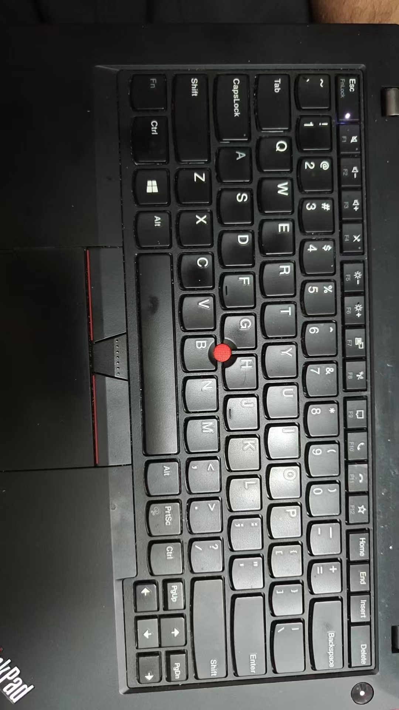

学生成绩分析仪表盘
整理数据质量、统计分析、模型评估与可视化结果。
打开交互式仪表盘 →
从知识库开始，接着做 PPT，再尝试动画和框图，最后进入数据分析。自 2026 年 9 月 23 日开始接触 Agent，在 AI 课的指导下每七天推进一个学习阶段。
查看完整时间线整理数据质量、统计分析、模型评估与可视化结果。
打开交互式仪表盘 →尝试用工具将流程、演示文稿和动态内容组织起来。
查看作品页 →用 dsh-tui、dsh-wiki-llm 和 Obsidian 搭建知识库；制作了搜索用的 web-recon 与搜索真实性验证用的 web-vafiry 两个 skill。
目前知识库里的检测软件会出错，问题来自 dsh 编写的检测软件；我把它作为后续排查和改进记录。
工具与实践 →